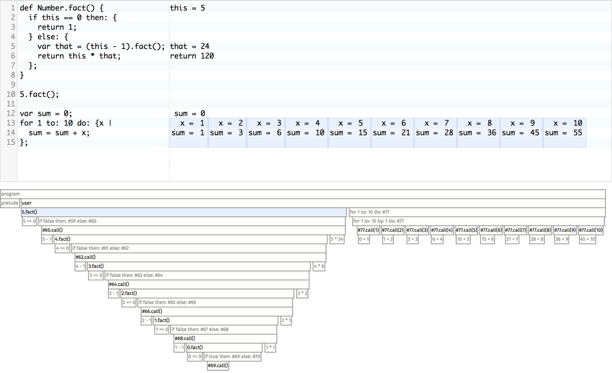
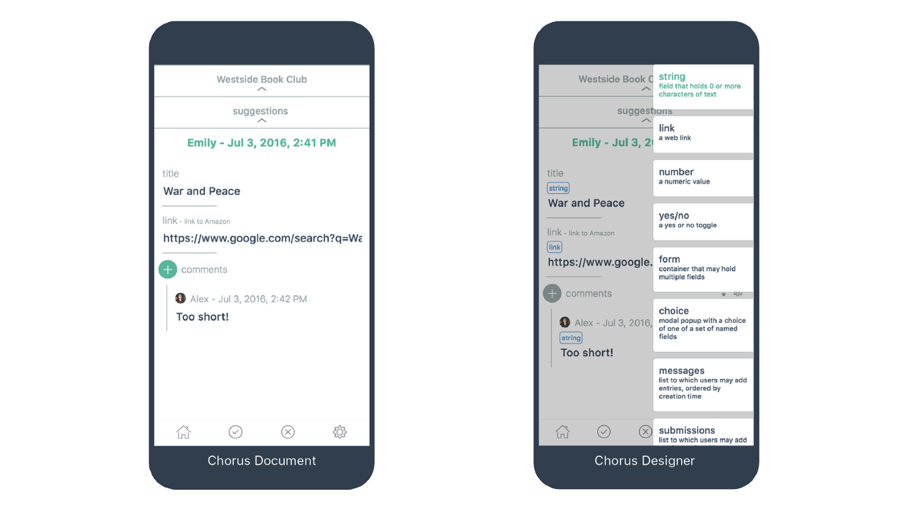
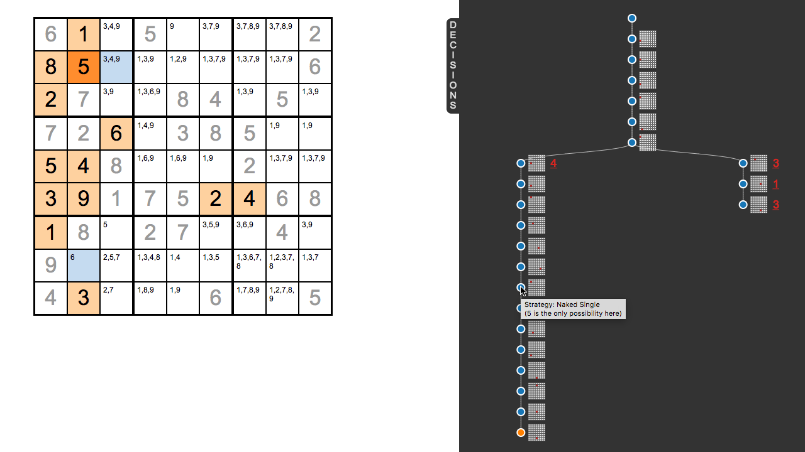

Flex
The Flex group uses technology to improve the range and fluidity of human expression. We invent new concepts and representations that amplify people’s ability to create, connect, and understand. We create tools that blur the line between using and creating, in order to provide a conversational medium for thinking and doing.
We are part of HARC at Y Combinator Research.
People
- Alex Warth (PI)
- Jonathan Edwards
- Kat Galas
- Marko Röder
- Patrick Dubroy
- Saketh Kasibatla
- Sean McDirmid
Projects
Ohm
Ohm is a parser generator and toolkit for quickly building parsers, compilers, and interpreters for new programming languages. Unlike many similar tools, Ohm is strongly focused on the developer experience. It has been used in several Flex research projects (Chorus, Pwned, MUD, Konnakkol) and has been taught in programming language courses at UCLA and Loyola Marymount University.
The Ohm Editor is a live programming environment for authoring Ohm grammars in the browser. Its central feature is a novel visualization that shows every step of the parsing process, helping the user understand how a given input was parsed (or why it failed).
Publications
Pwned

Pwned is a new programming language and environment that enables programmers to better see and understand the execution of their programs. We are creating an introductory programming course around this tool, and expect that it will help students build a deeper understanding of programming and develop powerful ways of thinking about computation.
Chorus

The Chorus project is exploring the middle ground between spreadsheets and programming. Current programming technology demands great expertise, discouraging the creation of a vast range of simple software applications. It need not be so. We take hope from pre-internet products like VisualBasic and HyperCard that brought programming to many non-experts. We want to pick up where those forerunners left off and make modern internet application programming almost as easy as using a spreadsheet. To achieve that goal we are willing to sacrifice power, compatibility, performance, and even the sacred traditions of programming culture. We are focusing first on mobile social apps: simple cloud applications running on phones that organize groups, for example a book club, a soccer league, or an office workflow. Our modest strategy is to develop a product with unique value to non-programmers that is a viral vector for a dramatically simplified programming experience.
Publications & Talks
- End-User Programming of Social Apps [video] YOW! 2015
- Live End-User Programming: A Demo/Manifesto DLS’16
Purple
Purple is a programmable visual environment for exploring ideas and thinking out loud. It provides two ways of viewing and manipulating a common model: a direct-manipulation canvas on the left, and a code editor on the right. The two sides support and complement each other, allowing the user to fluidly combine a concrete, visual approach with symbolic and abstract reasoning.
Unlike most programming environments, the goal of Purple is not to produce programs. Rather, it is an inquiring material: a medium that serves a cognitive purpose in exploring an idea or solving a problem. It is a vehicle for what John Dewey called “experimental doing for the sake of knowing” – much more like a whiteboard or a designer’s sketchbook than a conventional programming tool.
Trainee

Trainee is a tool to explore problem scenarios and help decision making. When exploring a (new) problem space, there may be many decisions to make and many options to consider. A lot of the time, good choices can only be assessed after the fact and after seeing the whole picture (“I know it when I see it”). This exploration of and familiarization with the problem can easily lead to dead ends and re-evaluations. Trainee therefore supports decision tracking and exploring multiple scenarios to guide users in their decisions.